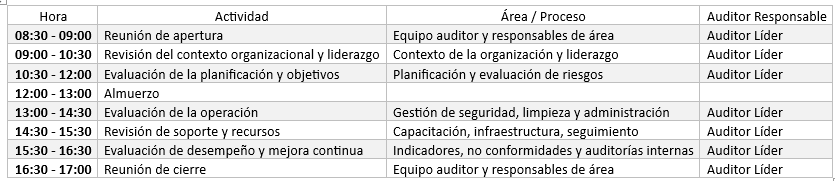

|
FORM 010| Plan de Auditoría
|
Ver. 000
|
|
|
Creado por EGC | Aprobado por CEO
|
Fecha: 01.12.2024
|
PLAN DE AUDITORÍA INTERNA DEL SISTEMA DE GESTIÓN DE CALIDAD
Organización:
Fecha del Plan de Auditoría:
Fecha planificada para la Auditoría:
Lugar:
Normas de Referencia: ISO 9001:2015
Objetivo de la Auditoría: Evaluar la conformidad del Sistema
de Gestión de la Calidad de la Organización, verificando
el cumplimiento de los requisitos normativos y la eficacia de los procesos
para garantizar la mejora continua.
1.
Objetivos de la Auditoría
Evaluar la conformidad del Sistema de Gestión de la Calidad (SGC).
Verificar el cumplimiento de los requisitos normativos y los objetivos
organizacionales.
Identificar oportunidades de mejora para garantizar la eficacia y la
mejora continua.
2.
Alcance de la Auditoría
La auditoría abarcará todos los procesos y actividades
relacionados con los servicios y productos ofrecidos por la Organización,
incluyendo:
-
[Descripción del servicio/producto 1]
-
[Descripción del servicio/producto 2]
-
[Descripción del servicio/producto 3]
3. Criterios de la Auditoría
-
ISO 9001:2015.
-
Políticas y objetivos de calidad establecidos por la organización.
-
Procedimientos y normativas internas.
4. Documentación de Referencia
-
Manual del Sistema de Gestión de la Calidad.
-
Procedimientos documentados y registros relevantes.
-
Resultados de auditorías internas previas.
-
Indicadores de desempeño y acciones correctivas/preventivas.
5. Agenda de Auditoría

6. Métodos de Auditoría
1.
Entrevistas: Interacción con el personal clave para verificar
conocimiento y aplicación de procesos.
2. Revisión Documental: Evaluación de registros, políticas
y planes de acción.
3. Observación Directa: Inspección de las operaciones
y su cumplimiento.
4. Inspección de Registros: Validación de registros asociados
a no conformidades y acciones correctivas.
7.
Criterios de Evaluación y Conclusión
- Cumplimiento de requisitos normativos y organizacionales.
- Identificación de no conformidades, oportunidades de mejora
y buenas prácticas.
- Recomendaciones para optimizar la eficacia del SGC.
Se realizará una reunión de cierre para presentar los hallazgos preliminares y discutir las acciones correctivas necesarias.
8. Comunicación de Resultados
1. Informe de Auditoría: Documento detallado con hallazgos, conformidades,
no conformidades y oportunidades de mejora.
2. Revisión por la Dirección: Presentación de resultados a la alta dirección para su análisis y aprobación de planes de acción
Aprobado
por:
Auditor Líder:
Fecha de Aprobación
| Versión | Fecha | Asiento | Aprueba |
| 000 | 01.12.2025 | Original | CEO |